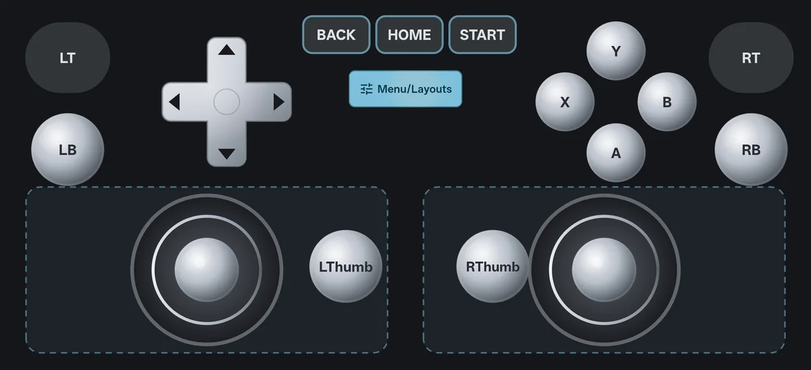

<!DOCTYPE html>
<html lang="fr" data-site-lang="fr">
  <head>
    <meta charset="UTF-8" />
    <meta name="viewport" content="width=device-width, initial-scale=1.0" />
    <title>PocketPad  votre téléphone en manette, clavier, souris, télécommande TV et télécommande de présentation</title>
    <meta name="description" content="PocketPad transforme votre téléphone Android en manette sans fil, clavier et souris pour PC, télécommande TV et télécommande de présentation. En Bluetooth, rien à installer sur l’autre appareil  en Wi‑Fi, avec Companion, gratuit pour Windows." />
    <meta name="keywords" content="téléphone comme manette, téléphone manette de jeu, téléphone télécommande PC, téléphone clavier et souris, téléphone télécommande TV, télécommande de présentation téléphone, pointeur diaporama téléphone, application manette sans fil, utiliser son téléphone comme manette, manette android, téléphone comme souris, manette bluetooth téléphone, manette wifi, pocketpad, manette virtuelle android" />
    <link rel="canonical" href="https://pocketpad.datronapps.com/fr/" />
    <!-- i18n:alternates -->
    <link rel="alternate" hreflang="en" href="https://pocketpad.datronapps.com/apps/pocketpad/index.html" />
    <link rel="alternate" hreflang="ja" href="https://pocketpad.datronapps.com/ja/" />
    <link rel="alternate" hreflang="ko" href="https://pocketpad.datronapps.com/ko/" />
    <link rel="alternate" hreflang="zh-Hans" href="https://pocketpad.datronapps.com/zh-hans/" />
    <link rel="alternate" hreflang="zh-Hant" href="https://pocketpad.datronapps.com/zh-hant/" />
    <link rel="alternate" hreflang="ru" href="https://pocketpad.datronapps.com/ru/" />
    <link rel="alternate" hreflang="fr" href="https://pocketpad.datronapps.com/fr/" />
    <link rel="alternate" hreflang="es" href="https://pocketpad.datronapps.com/es/" />
    <link rel="alternate" hreflang="pt" href="https://pocketpad.datronapps.com/pt-br/" />
    <link rel="alternate" hreflang="id" href="https://pocketpad.datronapps.com/id/" />
    <link rel="alternate" hreflang="vi" href="https://pocketpad.datronapps.com/vi/" />
    <link rel="alternate" hreflang="th" href="https://pocketpad.datronapps.com/th/" />
    <link rel="alternate" hreflang="de" href="https://pocketpad.datronapps.com/de/" />
    <link rel="alternate" hreflang="tr" href="https://pocketpad.datronapps.com/tr/" />
    <link rel="alternate" hreflang="hi" href="https://pocketpad.datronapps.com/hi/" />
    <link rel="alternate" hreflang="ar" href="https://pocketpad.datronapps.com/ar/" />
    <link rel="alternate" hreflang="x-default" href="https://pocketpad.datronapps.com/apps/pocketpad/index.html" />
    <!-- /i18n:alternates -->
    <!-- i18n:script -->
    <script src="../site_content/pocketpad_lang.js"></script>
    <!-- /i18n:script -->

    <!-- Google tag (gtag.js) -->
    <script async src="https://www.googletagmanager.com/gtag/js?id=G-XHYGFNHM91"></script>
    <script>
      window.dataLayer = window.dataLayer || [];
      function gtag() {
        dataLayer.push(arguments);
      }
      gtag("js", new Date());
      gtag("config", "G-XHYGFNHM91");
    </script>
    <script src="../site_content/analytics_events.js" defer></script>

    <link rel="icon" type="image/png" sizes="512x512" href="../assets/icons/gamepad_512.png" />
    <link rel="apple-touch-icon" href="../assets/icons/gamepad_512.png" />
    <link rel="manifest" href="../manifest.json" />
    <meta name="theme-color" content="#111215" />

    <meta property="og:type" content="website" />
    <meta property="og:url" content="https://pocketpad.datronapps.com/fr/" />
    <meta property="og:title" content="PocketPad  votre téléphone en manette, clavier, souris et télécommande" />
    <meta property="og:description" content="Transformez votre téléphone Android en manette sans fil, clavier et souris pour PC, télécommande TV ou télécommande de présentation. Bluetooth ou Wi‑Fi. Gratuit." />
    <meta property="og:image" content="https://pocketpad.datronapps.com/assets/banners/banner_final_2.png" />
    <meta property="og:image:width" content="1200" />
    <meta property="og:image:height" content="630" />
    <meta property="og:site_name" content="PocketPad" />
    <meta property="og:locale" content="fr_FR" />

    <meta name="twitter:card" content="summary_large_image" />
    <meta name="twitter:title" content="PocketPad  le téléphone en manette, clavier, souris et télécommande" />
    <meta name="twitter:description" content="Transformez votre téléphone en manette sans fil, télécommande PC, clavier et souris, télécommande TV et télécommande de présentation. Bluetooth ou Wi‑Fi. Application gratuite." />
    <meta name="twitter:image" content="https://pocketpad.datronapps.com/assets/banners/banner_final_2.png" />

    <meta name="robots" content="index, follow, max-image-preview:large, max-snippet:-1, max-video-preview:-1" />
    <meta name="author" content="Datron" />
    <meta name="application-name" content="PocketPad" />
    <meta name="mobile-web-app-capable" content="yes" />

    <script type="application/ld+json">
    {
      "@context": "https://schema.org",
      "@type": "SoftwareApplication",
      "name": "PocketPad",
      "alternateName": [
        "PocketPad Multi-Device Gamepad",
        "PocketPad Gamepad",
        "PocketPad Remote"
      ],
      "description": "PocketPad transforme votre téléphone Android en manette de jeu sans fil, clavier et souris pour PC, télécommande TV, télécommande multimédia et télécommande de présentation. Fonctionne en Bluetooth HID sans rien installer sur l’autre appareil, ou en Wi‑Fi avec PocketPad Companion pour Windows (facultatif) pour une latence minimale et le multijoueur.",
      "url": "https://pocketpad.datronapps.com/fr/",
      "downloadUrl": "https://play.google.com/store/apps/details?id=com.datron.pocketpad",
      "applicationCategory": "UtilitiesApplication",
      "operatingSystem": "Android",
      "offers": {
        "@type": "Offer",
        "price": "0",
        "priceCurrency": "USD"
      },
      "author": {
        "@type": "Organization",
        "name": "Datron",
        "url": "https://datronapps.com"
      },
      "screenshot": [
        "https://pocketpad.datronapps.com/assets/app/gamepad-classic.webp",
        "https://pocketpad.datronapps.com/assets/app/mousepad.webp",
        "https://pocketpad.datronapps.com/assets/app/keyboard.webp",
        "https://pocketpad.datronapps.com/assets/app/tv-remote.webp",
        "https://pocketpad.datronapps.com/assets/app/slides.webp",
        "https://pocketpad.datronapps.com/assets/app/layout-editor.webp"
      ],
      "featureList": [
        "Utiliser le téléphone comme manette de jeu sans fil",
        "Utiliser le téléphone comme clavier et souris pour PC",
        "Utiliser le téléphone comme télécommande TV",
        "Utiliser le téléphone comme télécommande multimédia",
        "Utiliser le téléphone comme télécommande de présentation",
        "Bluetooth HID sans installation sur l’autre appareil",
        "Wi‑Fi avec Companion pour Windows pour une latence minimale",
        "Dispositions de boutons personnalisables",
        "Skins de manette",
        "Direction par inclinaison pour les jeux de course",
        "Jusqu’à 16 téléphones sur un PC avec Companion",
        "Compatible PC, Mac, Android et Smart TV"
      ],
      "softwareVersion": "1.0",
      "aggregateRating": {
        "@type": "AggregateRating",
        "ratingValue": "4.5",
        "ratingCount": "1",
        "bestRating": "5",
        "worstRating": "1"
      },
      "inLanguage": "fr"
    }
    </script>
    <script type="application/ld+json">
    {
      "@context": "https://schema.org",
      "@type": "FAQPage",
      "mainEntity": [
        {
          "@type": "Question",
          "name": "Comment utiliser mon téléphone comme manette de jeu \u0001",
          "acceptedAnswer": {
            "@type": "Answer",
            "text": "Installez PocketPad sur votre téléphone Android. Il devient une manette sans fil avec sticks, gâchettes, boutons de tranche et croix directionnelle. Connectez-le en Bluetooth (aucune application à installer sur votre PC, Mac ou TV) ou en Wi‑Fi avec PocketPad Companion, gratuit pour Windows, pour une latence minimale. Associez, choisissez une disposition et jouez."
          }
        },
        {
          "@type": "Question",
          "name": "Comment utiliser mon téléphone comme clavier et souris à distance pour mon PC \u0001",
          "acceptedAnswer": {
            "@type": "Answer",
            "text": "PocketPad propose une disposition pavé tactile avec clics et défilement, ainsi qu’un clavier PC complet. Connectez votre téléphone à votre PC en Bluetooth ou en Wi‑Fi et il devient un clavier et une souris sans fil."
          }
        },
        {
          "@type": "Question",
          "name": "Puis-je utiliser mon téléphone comme télécommande TV \u0001",
          "acceptedAnswer": {
            "@type": "Answer",
            "text": "Oui. PocketPad a une disposition télécommande TV avec volume, lecture et flèches. Associez votre téléphone à votre TV ou appareil Android en Bluetooth et contrôlez Netflix, YouTube, VLC ou n’importe quelle application multimédia."
          }
        },
        {
          "@type": "Question",
          "name": "Comment utiliser mon téléphone comme télécommande de présentation \u0001",
          "acceptedAnswer": {
            "@type": "Answer",
            "text": "PocketPad propose une disposition télécommande de présentation pour PowerPoint, Google Slides et Canva. Balayez pour avancer ou reculer, et utilisez les boutons pour le plein écran et l’écran noir ou blanc. Connexion en Bluetooth, sans rien installer sur l’ordinateur du présentateur."
          }
        },
        {
          "@type": "Question",
          "name": "PocketPad fonctionne-t-il sans rien installer sur mon PC \u0001",
          "acceptedAnswer": {
            "@type": "Answer",
            "text": "Oui. Le Bluetooth ne demande aucun logiciel sur l’autre appareil. Associez votre téléphone depuis les paramètres Bluetooth de votre PC, Mac ou TV, puis connectez-vous. Pour une latence encore plus faible et le multijoueur sous Windows, vous pouvez installer en option PocketPad Companion, gratuit."
          }
        },
        {
          "@type": "Question",
          "name": "Plusieurs téléphones peuvent-ils se connecter comme manettes en même temps \u0001",
          "acceptedAnswer": {
            "@type": "Answer",
            "text": "Oui. Jusqu’à 16 téléphones peuvent se connecter au même PC Windows en Wi‑Fi avec PocketPad Companion. Chaque téléphone apparaît comme une manette distincte, idéal pour jouer à plusieurs sur le canapé."
          }
        }
      ],
      "inLanguage": "fr"
    }
    </script>
    <script type="application/ld+json">
    {
      "@context": "https://schema.org",
      "@type": "Organization",
      "name": "Datron",
      "url": "https://datronapps.com",
      "contactPoint": {
        "@type": "ContactPoint",
        "email": "support@datronapps.com",
        "contactType": "customer support"
      }
    }
    </script>

    <link rel="preconnect" href="https://fonts.googleapis.com" />
    <link rel="preconnect" href="https://fonts.gstatic.com" crossorigin />
    <link href="https://fonts.googleapis.com/css2?family=Archivo:wdth,wght@62..125,400..800&amp;display=swap" rel="stylesheet" />
    <link rel="stylesheet" href="../pocketpad_home.css" />
  </head>
  <body>
    <a class="skip" href="#main">Aller au contenu</a>

    <header class="head">
      <div class="wrap head__row">
        <a class="brand" href="./" aria-label="Accueil PocketPad">
          
          <span>PocketPad</span>
        </a>
        <nav class="nav" aria-label="PocketPad">
          <a href="./" aria-current="page">Présentation</a>
          <a href="how-to.html">Se connecter</a>
          <a href="faq.html">FAQ</a>
          <a href="gamepad-tester.html">Testeur de manette</a>
          <a href="whats-new.html">Nouveautés</a>
        </nav>
        <!-- i18n:switcher -->
        <details class="lang" translate="no">
          <summary aria-label="Language: Français"><svg viewBox="0 0 24 24" aria-hidden="true"><path d="M12 2a10 10 0 1 0 0 20 10 10 0 0 0 0-20zm6.9 6h-3a15.7 15.7 0 0 0-1.4-3.6A8 8 0 0 1 18.9 8zM12 4c.8 1.2 1.5 2.5 1.9 4h-3.8c.4-1.5 1.1-2.8 1.9-4zM4.3 14a8.2 8.2 0 0 1 0-4h3.4a16.5 16.5 0 0 0 0 4H4.3zm.8 2h3a15.7 15.7 0 0 0 1.4 3.6A8 8 0 0 1 5.1 16zm3-8h-3a8 8 0 0 1 4.4-3.6C8.9 5.5 8.4 6.7 8.1 8zM12 20c-.8-1.2-1.5-2.5-1.9-4h3.8c-.4 1.5-1.1 2.8-1.9 4zm2.3-6H9.7a14.7 14.7 0 0 1 0-4h4.6a14.7 14.7 0 0 1 0 4zm.2 5.6c.6-1.1 1.1-2.3 1.4-3.6h3a8 8 0 0 1-4.4 3.6zm1.8-5.6a16.5 16.5 0 0 0 0-4h3.4a8.2 8.2 0 0 1 0 4h-3.4z"/></svg><span>Français</span></summary>
          <ul class="lang__menu">
            <li><a href="../apps/pocketpad/index.html" hreflang="en" lang="en" data-lang="en">English</a></li>
            <li><a href="../ja/" hreflang="ja" lang="ja" data-lang="ja">日本語</a></li>
            <li><a href="../ko/" hreflang="ko" lang="ko" data-lang="ko">한국어</a></li>
            <li><a href="../zh-hans/" hreflang="zh-Hans" lang="zh-Hans" data-lang="zh-hans">简体中文</a></li>
            <li><a href="../zh-hant/" hreflang="zh-Hant" lang="zh-Hant" data-lang="zh-hant">繁體中文</a></li>
            <li><a href="../ru/" hreflang="ru" lang="ru" data-lang="ru">Русский</a></li>
            <li><a href="./" hreflang="fr" lang="fr" data-lang="fr" aria-current="true">Français</a></li>
            <li><a href="../es/" hreflang="es" lang="es-419" data-lang="es">Español</a></li>
            <li><a href="../pt-br/" hreflang="pt" lang="pt-BR" data-lang="pt-br">Português (Brasil)</a></li>
            <li><a href="../id/" hreflang="id" lang="id" data-lang="id">Bahasa Indonesia</a></li>
            <li><a href="../vi/" hreflang="vi" lang="vi" data-lang="vi">Tiếng Việt</a></li>
            <li><a href="../th/" hreflang="th" lang="th" data-lang="th">ไทย</a></li>
            <li><a href="../de/" hreflang="de" lang="de" data-lang="de">Deutsch</a></li>
            <li><a href="../tr/" hreflang="tr" lang="tr" data-lang="tr">Türkçe</a></li>
            <li><a href="../hi/" hreflang="hi" lang="hi" data-lang="hi">हिन्दी</a></li>
            <li><a href="../ar/" hreflang="ar" lang="ar" dir="rtl" data-lang="ar">العربية</a></li>
          </ul>
        </details>
        <!-- /i18n:switcher -->
        <a class="pill pill--line head__cta" aria-label="Disponible sur Google Play" href="https://play.google.com/store/apps/details?id=com.datron.pocketpad&hl=fr" rel="noopener noreferrer" target="_blank">
          <svg viewBox="0 0 24 24" aria-hidden="true"><path d="M4.2 2.4 13.8 12l-9.6 9.6c-.3-.2-.5-.6-.5-1.1V3.5c0-.5.2-.9.5-1.1zm10.7 10.7 2.4 2.4-11 6.3 8.6-8.7zm3.5-4.1 2.7 1.6c.8.5.8 1.8 0 2.3l-2.7 1.6-2.6-2.5 2.6-3zM6.3 2.2l11 6.3-2.4 2.4-8.6-8.7z"/></svg>
          <span>Disponible sur Google Play</span>
        </a>
      </div>
    </header>

    <main id="main">
      <!-- Hero -->
      <section class="hero" aria-labelledby="hero-title">
        <div class="wrap hero__grid">
          <div class="hero__text">
            <h1 id="hero-title" class="display"><span>Votre téléphone</span> <span>est la manette.</span></h1>
            <p class="hero__lead">Une manette, un clavier et une souris, une télécommande TV et une télécommande de diapos pour votre PC, Mac, TV ou tablette.</p>
            <div class="hero__actions">
              <a class="pill" href="https://play.google.com/store/apps/details?id=com.datron.pocketpad&hl=fr" rel="noopener noreferrer" target="_blank">
                <svg viewBox="0 0 24 24" aria-hidden="true"><path d="M4.2 2.4 13.8 12l-9.6 9.6c-.3-.2-.5-.6-.5-1.1V3.5c0-.5.2-.9.5-1.1zm10.7 10.7 2.4 2.4-11 6.3 8.6-8.7zm3.5-4.1 2.7 1.6c.8.5.8 1.8 0 2.3l-2.7 1.6-2.6-2.5 2.6-3zM6.3 2.2l11 6.3-2.4 2.4-8.6-8.7z"/></svg>
                Disponible sur Google Play
              </a>
              <p class="note">Gratuit. En Bluetooth, rien à installer sur l’autre appareil.</p>
            </div>
          </div>
          <figure class="device device--land hero__shot">
            
          </figure>
        </div>
      </section>

      <!-- Connect + Companion download -->
      <section class="band band--panel" id="connect" aria-labelledby="connect-title">
        <div class="wrap">
          <div class="band__head">
            <h2 id="connect-title">Connectez-vous à votre façon</h2>
          </div>
          <div class="ways">
            <div class="way">
              <div class="way__head">
                <h3>Bluetooth</h3>
                <span class="tag">Rien à installer</span>
              </div>
              <p>Associez une seule fois depuis les paramètres Bluetooth de votre PC, Mac, TV ou tablette. Il apparaît comme une vraie manette, un clavier et une souris.</p>
              <a class="textlink" href="how-to.html">Guide de configuration Bluetooth</a>
            </div>

            <div class="way way--pc">
              <div class="way__head">
                <h3 id="downloads-heading">Wi‑Fi avec Companion</h3>
                <span class="tag tag--peri">Windows, facultatif</span>
              </div>
              <p>La latence la plus faible, trouve votre PC tout seul et permet à 16 téléphones de jouer en même temps.</p>
              <div class="dl-options">
                <div class="dl-option">
                  <span class="tag tag--peri">Téléchargement direct</span>
                  <a class="pill" id="dl-exe" href="https://pocketpad.datronapps.com/downloads/latest/PocketPad-PC-Setup.exe" download="PocketPad-PC-Setup.exe">
                    <svg viewBox="0 0 32 32" aria-hidden="true"><path d="M2 4.3 14.1 2.3v12.1H2V4.3zm0 15.1h12.1V31.2L2 29.1V19.4zm15.1-17.1L30 0v12.1H17.1V2.3zm0 16.1H30V32l-12.9-2.1V18.4z"/></svg>
                    Télécharger pour Windows
                  </a>
                  <p class="note">Version <span id="dl-version" translate="no">2.4.1</span> pour Windows 10 et 11 (x64). Installe le pilote de manette pour vous.</p>
                </div>
                <div class="dl-option">
                  <span class="tag tag--peri">Microsoft Store</span>
                  <a class="pill" id="dl-store" href="https://apps.microsoft.com/detail/9NTN3S200HR0" rel="noopener noreferrer" target="_blank">
                    <svg viewBox="0 0 24 24" aria-hidden="true"><path d="M2 2h9.5v9.5H2zm10.5 0H22v9.5h-9.5zM2 12.5h9.5V22H2zm10.5 0H22V22h-9.5z"/></svg>
                    Obtenir sur le Microsoft Store
                  </a>
                  <p class="note">Pour le mode manette, installez aussi le <a class="textlink" href="https://github.com/nefarius/ViGEmBus/releases/latest" rel="noopener noreferrer" target="_blank">pilote ViGEmBus</a> gratuit pour que les jeux voient votre téléphone comme une manette Xbox.</p>
                </div>
              </div>

              <details class="warn">
                <summary>Un avertissement du navigateur ou de SmartScreen </summary>
                <div class="warn__body">
                  <p>Companion est récent, Windows et votre navigateur ne le connaissent pas encore. C’est normal pour un nouveau logiciel.</p>
                  <ol>
                    <li><b>Le navigateur indique que le fichier n’est pas souvent téléchargé </b> ouvrez vos téléchargements (Ctrl + J), ouvrez le menu du fichier et choisissez Conserver, puis Conserver quand même si on vous le demande.</li>
                    <li><b>« Windows a protégé votre ordinateur  </b> cliquez sur Informations complémentaires, puis sur Exécuter quand même.</li>
                    <li>Acceptez la demande du Contrôle de compte d’utilisateur pour que l’installation puisse ajouter le pilote ViGEmBus.</li>
                  </ol>
                  <p>L’installation n’ajoute le pilote open source ViGEmBus que s’il manque, pour que les jeux voient votre téléphone comme une manette Xbox. Pour le Wi‑Fi, autorisez Companion sur les réseaux privés dans le pare-feu Windows.</p>
                </div>
              </details>

              <ul class="links">
                <li><a href="whats-new.html">Nouveautés</a></li>
                <li><a href="https://pocketpad.datronapps.com/downloads/README.txt">Sommes de contrôle</a></li>
                <li><a href="https://pocketpad.datronapps.com/downloads/THIRD_PARTY_NOTICES.txt">Mentions tierces</a></li>
                <li><a href="license.html">Licence</a></li>
              </ul>
            </div>
          </div>
        </div>
      </section>

      <!-- Gamepad -->
      <section class="band" id="gamepad" aria-labelledby="gamepad-title">
        <div class="wrap">
          <div class="band__head">
            <h2 id="gamepad-title">Une vraie manette, dans votre téléphone</h2>
            <p>Sticks, gâchettes, boutons de tranche et croix directionnelle. Les jeux voient une vraie manette, donc tout fonctionne.</p>
          </div>
          <div class="pad-grid">
            <figure class="shot">
              <div class="device device--land"></div>
              <figcaption><b>Inclinez pour tourner</b><span>Accélérateur et frein sur les gâchettes. Inclinez le téléphone pour tourner.</span></figcaption>
            </figure>
            <figure class="shot">
              <div class="device device--land"></div>
              <figcaption><b>Choisissez un skin</b><span>Classique, Argent ou Or.</span></figcaption>
            </figure>
          </div>
          <ul class="points">
            <li><b>Sticks flottants</b><span>Ils apparaissent là où se pose votre pouce.</span></li>
            <li><b>Clic des sticks</b><span>Touchez deux fois un stick pour l’enfoncer.</span></li>
            <li><b>Jeu à plusieurs</b><span>Jusqu’à 16 téléphones sur un PC Windows, chacun sa manette.</span></li>
          </ul>
        </div>
      </section>

      <!-- Other layouts -->
      <section class="band band--panel" id="layouts" aria-labelledby="layouts-title">
        <div class="wrap">
          <div class="band__head">
            <h2 id="layouts-title">Bien plus qu’une manette</h2>
            <p>Changez de disposition depuis le menu. Même application, même connexion.</p>
          </div>
          <ul class="phones">
            <li>
              <figure class="shot">
                <div class="device device--port"></div>
                <figcaption><b>Souris</b><span>Pavé tactile, clics, défilement et raccourcis.</span></figcaption>
              </figure>
            </li>
            <li>
              <figure class="shot">
                <div class="device device--port"></div>
                <figcaption><b>Clavier</b><span>Toutes les touches, y compris les touches F et les raccourcis.</span></figcaption>
              </figure>
            </li>
            <li>
              <figure class="shot">
                <div class="device device--port"></div>
                <figcaption><b>Télécommande TV</b><span>Volume, lecture et flèches pour toutes les applis TV.</span></figcaption>
              </figure>
            </li>
            <li>
              <figure class="shot">
                <div class="device device--port"></div>
                <figcaption><b>Télécommande de diapos</b><span>PowerPoint, Google Slides ou Canva.</span></figcaption>
              </figure>
            </li>
          </ul>
        </div>
      </section>

      <!-- Also in the app -->
      <section class="band" aria-labelledby="more-title">
        <div class="wrap">
          <div class="band__head">
            <h2 id="more-title">Aussi dans l’application</h2>
          </div>
          <div class="bento">
            <div class="bento__main">
              <figure class="shot">
                <div class="device device--land"></div>
                <figcaption><b>Créez votre disposition</b><span>Déplacez et redimensionnez chaque commande, et enregistrez autant de dispositions que vous voulez.</span></figcaption>
              </figure>
              <ul class="promises">
                <li><b>Téléchargement gratuit</b><span>Sur Google Play.</span></li>
                <li><b>Sans compte</b><span>Ouvrez et jouez.</span></li>
                <li><b>Reste sur votre réseau</b><span>Vos commandes vont directement du téléphone à votre appareil.</span></li>
              </ul>
            </div>
            <div class="bento__side">
              <figure class="shot">
                <div class="device device--land"></div>
                <figcaption><b>Boutons de toutes tailles</b><span>Des boutons géants pour les petites mains ou les jeux entre amis.</span></figcaption>
              </figure>
              <div class="tester">
                <b>Testez n’importe quelle manette</b>
                <span>Voyez chaque bouton, stick et gâchette en direct dans votre navigateur. Compatible Xbox, PlayStation et PocketPad.</span>
                <a class="textlink" href="gamepad-tester.html">Ouvrir le testeur de manette</a>
              </div>
            </div>
          </div>
        </div>
      </section>

      <!-- Closing -->
      <section class="band band--deep" aria-labelledby="closing-title">
        <div class="wrap closing">
          <h2 id="closing-title" class="display"><span>Prenez votre téléphone.</span> <span>Lancez la partie.</span></h2>
          <div class="closing__side">
            <a class="pill" href="https://play.google.com/store/apps/details?id=com.datron.pocketpad&hl=fr" rel="noopener noreferrer" target="_blank">
              <svg viewBox="0 0 24 24" aria-hidden="true"><path d="M4.2 2.4 13.8 12l-9.6 9.6c-.3-.2-.5-.6-.5-1.1V3.5c0-.5.2-.9.5-1.1zm10.7 10.7 2.4 2.4-11 6.3 8.6-8.7zm3.5-4.1 2.7 1.6c.8.5.8 1.8 0 2.3l-2.7 1.6-2.6-2.5 2.6-3zM6.3 2.2l11 6.3-2.4 2.4-8.6-8.7z"/></svg>
              Disponible sur Google Play
            </a>
            <p class="note">Gratuit sur Android. Companion pour Windows est facultatif.</p>
          </div>
        </div>
      </section>
    </main>

    <footer class="foot">
      <div class="wrap foot__grid">
        <div>
          <p class="foot__title">PocketPad</p>
          <p class="foot__muted">Créé par Datron, développeur indépendant.</p>
          <a href="https://datronapps.com/">Autres applications de Datron</a>
        </div>
        <div>
          <p class="foot__title">Pages</p>
          <ul>
            <li><a href="./">Présentation</a></li>
            <li><a href="how-to.html">Se connecter</a></li>
            <li><a href="faq.html">FAQ</a></li>
            <li><a href="info.html">Détails</a></li>
            <li><a href="gamepad-tester.html">Testeur de manette</a></li>
            <li><a href="whats-new.html">Nouveautés</a></li>
            <li><a href="privacy.html">Confidentialité</a></li>
            <li><a href="license.html">Licence</a></li>
          </ul>
        </div>
        <div>
          <p class="foot__title">Aide</p>
          <ul>
            <li><a href="mailto:dasoft573@gmail.com">dasoft573@gmail.com</a></li>
            <li><a href="mailto:dasoft573@gmail.com?subject=Bug%20detected%3A%20">Signaler un bug</a></li>
            <li><a href="mailto:dasoft573@gmail.com?subject=Feature%20request%3A%20">Suggérer une fonctionnalité</a></li>
          </ul>
        </div>
      </div>
    </footer>

    <script type="module" src="../site_content/pocketpad_overview_site.js"></script>
  </body>
</html>
